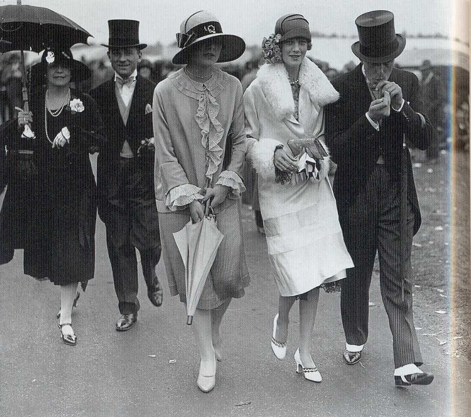

Etymology
The slang word flapper, describing a young woman, is sometimes supposed to refer to a young bird flapping its wings while learning to fly. However, it may derive from an earlier use in northern England to mean teenage girl, referring to one whose hair is not yet put up and whose plaited pigtail flapped on her back; or from an older word meaning prostitute.
The slang word "flap" is known to have been used for a young prostitute as early as 1631. By the 1890s the word "flapper" was emerging in England as popular slang both for a very young prostitute, and in a more general – and less derogatory sense – of any lively mid-teenage girl.
The word appeared in print in the United Kingdom as early as 1903 and United States 1904, when novelist Desmond Coke used it in his college story of Oxford life, Sandford of Merton: "There's a stunning flapper". In 1907 English actor George Graves explained it to Americans as theatrical slang for acrobatic young female stage performers.
By 1908, newspapers as serious as The Times used it, although with careful explanation: "A 'flapper', we may explain, is a young lady who has not yet been promoted to long frocks and the wearing of her hair 'up'". By November 1910, the word was popular enough for AE James to begin a series of stories in the London Magazine featuring the misadventures of a pretty fifteen-year-old girl and titled "Her Majesty the Flapper". By 1911, a newspaper review indicates the mischievous and flirtatious 'flapper' was an established stage-type.
By 1912, the London theatrical impresario John Tiller, defining the word in an interview he gave to the New York Times, described a 'flapper' as belonging to a slightly older age group, a girl who has "just come out". Although the word was still largely understood as referring to high-spirited teenagers gradually in Britain it was being extended to describe any impetuous immature woman. The use of the word increased during World War I, perhaps due to the visible emergence of young women into the workforce to supply the place of absent men; a Times article on the problem of finding jobs for women made unemployed by the return of the male workforce is headed "The Flapper's Future". Under this influence, the meaning of the term changed somewhat, to apply to "independent, pleasure-seeking, khaki-crazy young women."
By 1920, the term had taken on the full meaning of the flapper generation style and attitudes. In his lecture that year on Britain's surplus of young women caused by the loss of young men in war, Dr. R. Murray-Leslie criticized "the social butterfly type… the frivolous, scantily-clad, jazzing flapper, irresponsible and undisciplined, to whom a dance, a new hat, or a man with a car, were of more importance than the fate of nations." As the adoption of the term in America coincided with a fashion among teenage girls in the early 1920s for wearing unbuckled galoshes a widespread false etymology held that they were called "flappers" because they flapped when they walked, as they wore their overshoes or galoshes unfastened, showing that they defied convention in a manner similar to the 21st century fad for untied shoelaces.
By the mid-thirties in Britain, although still occasionally used, the word ‘flapper’ had become associated with the past. In 1936 a Times journalist grouped it with terms such as ‘blotto’ as out-dated slang: ‘(blotto) evokes a distant echo of glad rags and flappers ... It recalls a past which is not yet ‘period’.’
Evolution of the image
The first appearance of the word and image in the United States came from the popular 1920 Frances Marion film, The Flapper, starring Olive Thomas. Thomas starred in a similar role in 1917, though it was not until The Flapper that the term was used. In her final movies, she was seen as the flapper image.=Other actresses, such as Clara Bow, Louise Brooks, Colleen Moore and Joan Crawford would soon build their careers on the same image, achieving great popularity.
In the United States, popular contempt for Prohibition was a factor in the rise of the flapper. With legal saloons and cabarets closed, back alley speakeasies became prolific and popular. This discrepancy between the law-abiding, religion-based temperance movement and the actual ubiquitous consumption of alcohol led to widespread disdain for authority. Flapper independence was also a response to the Gibson girls of the 1890s. Although that pre-war look does not resemble the flapper style, their independence may have led to the flapper wise-cracking tenacity 30 years later.
Writers in the United States such as F. Scott Fitzgerald and Anita Loos and illustrators such as Russell Patterson, John Held, Jr., Ethel Hays and Faith Burrows popularized the flapper look and lifestyle through their works, and flappers came to be seen as attractive, reckless, and independent. Among those who criticized the flapper craze was writer-critic Dorothy Parker, who penned "Flappers: A Hate Song" to poke fun at the fad. The secretary of labor denounced the "flippancy of the cigarette smoking, cocktail-drinking flapper." A Harvard psychologist reported that flappers had "the lowest degree of intelligence" and constituted "a hopeless problem for educators."
A related but alternative use of the word "flapper" in the late 1920s was as a media catch word that referred to adult women voters and how they might vote differently than men their age. While the term "flapper" had multiple uses, flappers as a social group were distinct from other 1920s fads.